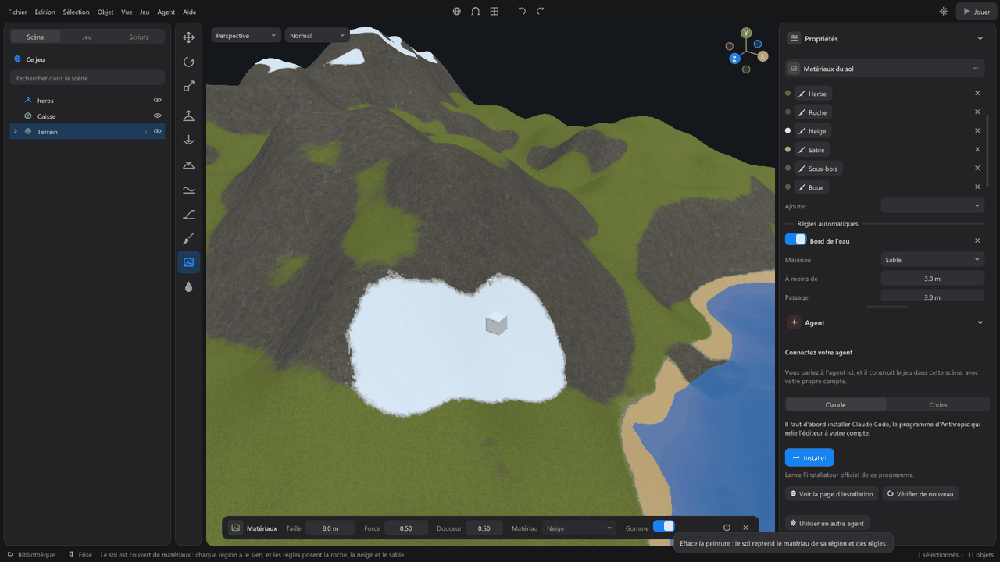

Materials¶
A material says what a surface is made of: stone, wood, metal, grass, sand, snow... Its color, whether it is smooth or matte, whether it is metal, its relief and the light it gives off. It is a file of the project, kept in the materials/ folder: you create it once, put it on as many objects as you like, and changing it changes them all.
WorldMint ships a small starter library made of real royalty-free textures (ambientCG, CC0): Snow, Rock, Grass, Forest floor, Sand, Mud, Dirt, Cobblestones, Wooden planks, Brushed metal. Choosing one copies it into your project, with its images.

The material of an object¶
Select an object (a model or a base shape): its properties have a Material section.
| Setting | Effect |
|---|---|
| Material | The model's own keeps its own colors. Otherwise, a material of the project, or one from the Library (copied into the project). |
| New material | Creates a material, with your name, put on the selected objects. |
A material shows a preview on a sphere, under the light of the scene, and its settings:
| Setting | Effect |
|---|---|
| Name | The name you see in the lists. |
| Color | Tints the color image (white: as is). |
| Roughness | 0: smooth and shiny, like a mirror. 1: matte, like stone. |
| Metal | 0: stone, wood, plastic. 1: metal, which reflects its color. |
| Pattern size | The size of one repeat of the image, in meters. |
| Placement | On the model: the image follows the model's texture coordinates. Without stretching: it is laid by the world, at the same size on every face, even on an enlarged shape. The right choice for walls, floors and rocks. |
| Image relief | The strength of the relief map: 0 removes it, 2 doubles it. |
| Emitted light | Its color and strength: 0 nothing, higher the surface glows by itself (screens, lamps, lava). |
| Shader | A surface that moves or glows by itself: a hologram, a dissolve, lava, wind in the leaves. Choose a recipe, tune its sliders: see Shaders. |
| Images | Color, relief (normal map), roughness, metal, shadow of hollows, height, emitted light: the path of an image of the project, or drag one from the explorer. |
Each setting is undone with Ctrl+Z. The material file is written when you save (and before the game starts).
Ground materials¶
A terrain first shows the colors of its regions. Select the Terrain object: the Ground materials section offers Cover with materials. Each region then gets a real material (grass for plains and forests, rock, snow, sand for deserts and beaches, mud for swamps), and three automatic rules are added:
| Rule | Where it lays its material |
|---|---|
| Slope | On ground steeper than an angle (rock on cliffs). |
| Altitude | Above a height (snow on peaks). |
| Water's edge | Within a distance of water (sand on beaches). |
Each rule has its material, its threshold and its Transition (the width of the fade, which waves so as not to draw a line). They apply in order: the last one wins. A switch turns each off.
- Add: one more material to paint (16 at most). The cross removes it; its painting is erased.
- Ground material, in the properties of a region: the material that covers it.
- Variation: slightly lighter or darker areas, and the pattern blended with a larger copy of itself; the repetition of the images no longer shows.
- Back to the region colors: the ground takes back its colors (Ctrl+Z to return).
On cliffs, the images are laid on the three axes: rock does not stretch. Where two materials blend, the one with the higher relief wins: pebbles stand out of the sand instead of a plain fade.
The Materials brush¶
In the tool column of the view, Materials paints a material on the ground, over the one of the regions and the rules: hand painting always wins.
| Setting | Effect |
|---|---|
| Size | The radius of the brush, in meters. |
| Strength | How fast it covers. |
| Softness | 0: a sharp edge. 1: a fade from the center to the edge. The small circle shows where it covers fully. |
| Material | The one you paint, among those of the ground. |
| Eraser | Erases the painting: the ground takes back the material of its region and of the rules. |
Each brush stroke is undone with Ctrl+Z. The painting is stored in tiles of 64 m: a stroke only touches the tiles it covers.
Regions still decide the vegetation, the footsteps and the systems: materials only change the look of the ground.
With the agent¶
The agent can make the same gestures: list, create and put materials, cover the ground, set the rules, paint an area (a square, a field), along a line (a path) or in dabs, erase, then check what covers the ground at a point and look at the result in an image. Each gesture is undone with Ctrl+Z.